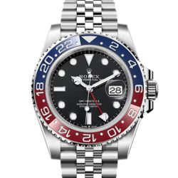

A symbol of prestige and performance, Rolex is renowned for its timeless design, robust craftsmanship, and innovative technologies like the Oyster case and Perpetual movement.

Franck Muller
Often called the "Master of Complications," Franck Muller is known for bold, avant-garde designs and complex mechanical movements that blend traditional artistry with modern flair.
Hublot
Famous for its "Art of Fusion" philosophy, Hublot combines traditional Swiss watchmaking with innovative materials and bold aesthetics, especially in its Big Bang and Classic Fusion collections.
Richard Mille
Blending cutting-edge materials with futuristic designs, Richard Mille creates high-tech timepieces favored by athletes and collectors for their lightweight yet complex construction.
Lange & Söhne
A German luxury watchmaker renowned for precision, engineering, and elegant detailing, A. Lange & Söhne is admired for its distinct style and masterfully finished movements.